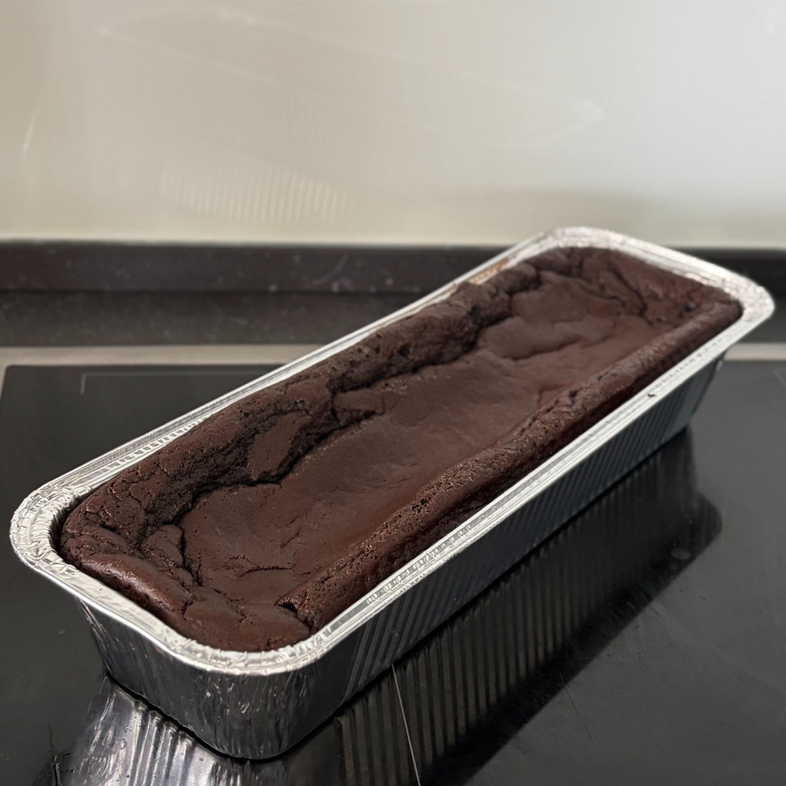
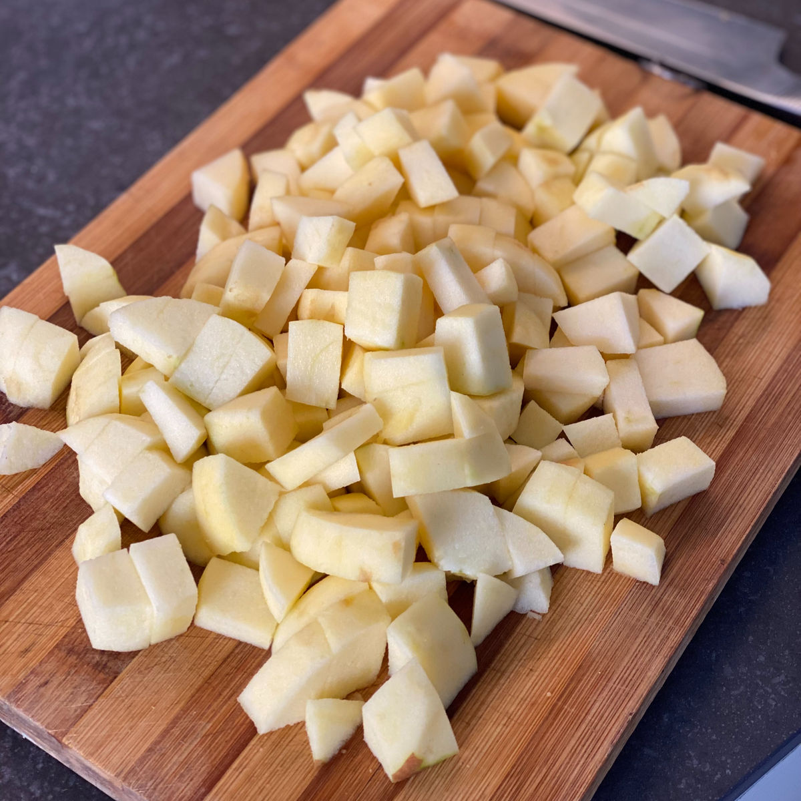
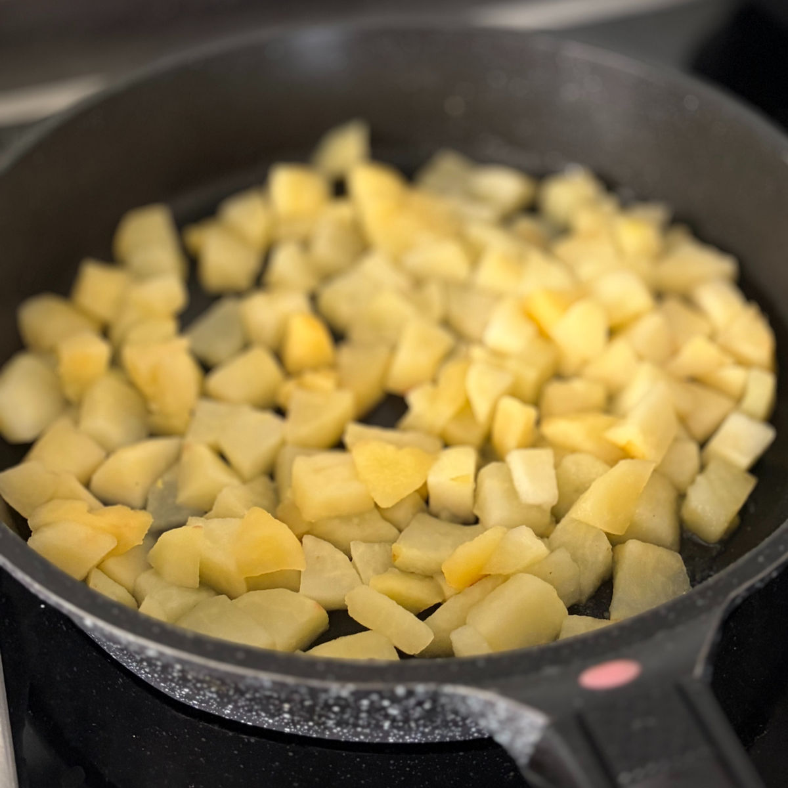
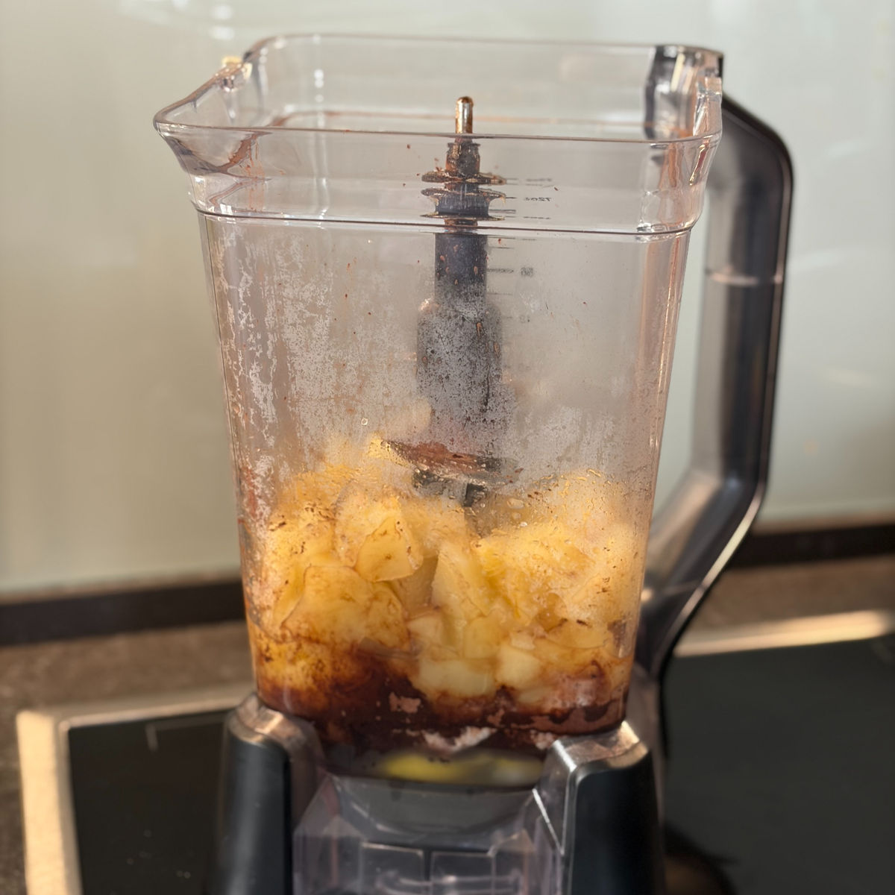
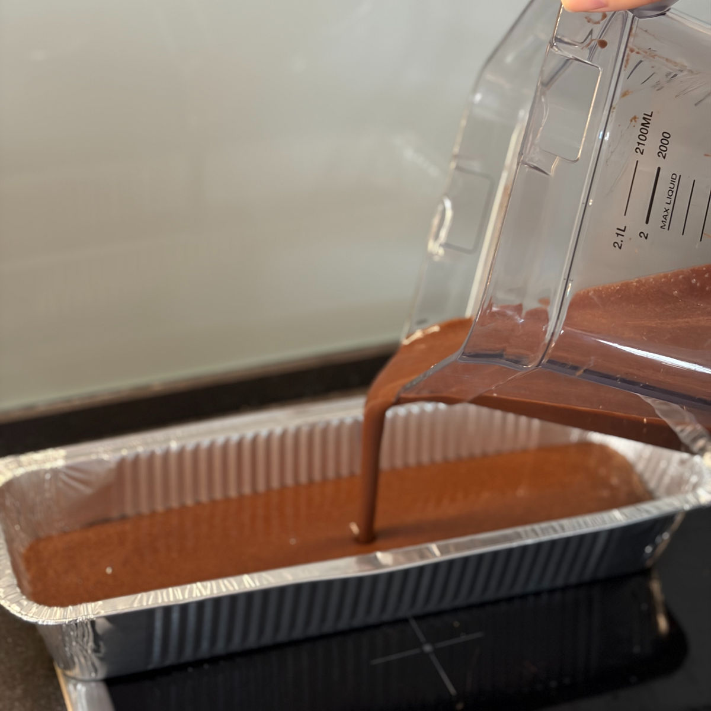

עוגת שוקולד פאדג'ית
עודכן: 13 במאי
טבלת ערכים תזונתיים בקירוב:
שימו לב שהערכים משתנים כתלות בממתיק וכמות תפוחים בגרמים. הערכים המצויינים פה הם עבור מתכון ללא חתיכות שוקולד ועם ממתיק סוויטאנו. בנוסף, בעוגה השתמשתי באבקת קקאו שהיא לא דלת שומן שהמלצתי עליה
| ערכים | פרוסה (50 גרם) | 100 גרם |
|---|---|---|
| קלוריות | 62.5 | 125 |
| פחמימות | 7 | 14 |
| חלבונים | 3.25 | 6.5 |
הערכים התזונתיים הם גם הבתאם אליה.
ערכים
פרוסה (50 גרם)
100 גרם
קלוריות
62.5
125
פחמימות
14
חלבונים
3.25
6.5
*שימו לב שהערכים משתנים כתלות בממתיק וכמה תפוחים או גרם ביצים יש בפועל ולכן שימו לב במידה ושיניתם כמויות \ החלטתם להוסיף שוקולד או הכנתם את העוגה עם דבש הערכים התזונתיים ישתנו מעט. הערכים המצויינים פה הם למתכון הבסיסי ללא שוקולד ועם ממתיק סוויטאנו (לא דבש). בנוסף, בעוגה השתמשתי באבקת קקאו שהיא לא דלת שומן שהמלצתי עליה
בכתבה הבאה
ולכן הערכים התזונתיים הם גם הבתאם אליה.
מתכון זה מבוסס על
הסרטון הזה
. המתכון הוא של ג'ני, תודה רבה עשית עוגה מדהימה, כמובן שאתם יותר ממוזמנים לצפות בסרטון ההכנה המקסים שלה ולנסות את המתכון גם בגרסה הזו. המתכון ברובו מבוסס על הסרטון אך עשיתי גם קצת שינויים בהתאם לטעם שאני מתחברת אליו וגם ניסתי קצת להוריד מרכיבים כגון שמן הקוקוס על מנת להוריד את הערך הקלורי של העוגה.

מתכון:
תבנית: אינגילש קייק
מרכיבים:
4 תפוחים אדומים (כ- 600 גרם לאחר קילוף והוצאת הליבה)
2 כפות מים
4 ביצים L
15 גרם סוויטאנגו (1 כף) / 32 גרם דבש (שימו לב: דבש אינו מתאים לסוכרתיים ולקיטוגנים)
5 גרם אבקת אפייה
40 גרם קקאו
1/4 (רבע) כפית מלח – לא לוותר!
כפית תמצית ווניל
שוקולד לפיזור מעל- לא חובה :)
שמן קוקוס / חמאה / שמן - לשימון התבנית
הוראות הכנה:
חממו תנור ל180 מעלות (אני עובדת על מצב טורבו אך לא חובה).
קלפו את התפוחים וחתכו אותם לקוביות (ראו בהערות מה ניתן לעשות עם השאריות קליפה).
ערבבו 2 כפות מים עם 4 גרם (כפית) סוויטאנגו \ 12 גרם דבש.
טגנו את התפוחים על מחבת עם המים שעורבבו עם הממתיק, בשלו על להבה בינונית עם מכסה סגור עד לריכוך התפוחים בין 10 ל15 דקות, תלוי לאיזה גודל חתכתם אם גדול אז חכו לכיוון ה15 דקות. חכו שהתפוחים יתקררו לטמפרטורת החדר (שהביצים לא יתבשלו מחום התפוחים).
בזמן הזה שימו את שאר המרכיבים (מלבד תוספת השוקולד) בבלנדר והוסיפו את התפוחים המקוררים.
הוספו שושולד מריר קצוץ לבלילה במידה ואתם רוצים.
שמנו תבנית בשמן קוקוס או חמאה ושפכו אליה את הבלילה.
מכניסים את העוגה ל30-35 דקות עד שהעוגה יציבה בחלקה העליון.
הערות:
משאריות קליפות התפוחים ניתן להכין תה עם תווים של תפוחים וקינמון. ניתן להוסיף תה שחור ווניל.
שימו לב שהעוגה מאוד גבוהה, היא כן תתפח בתנור אך היא לא אמורה לצאת מדפנות התבנית. במידה ומדאיג אתכם שהעוגה תשפך במהלך האפייה אתם יכולים לשים קצת בלילה בצד כלי קטן ולאפות בנפרד עוגה אישית קטנה בנוסף.
תמונות מתהליך ההכנה:

גודל חיתוך התפוחים

תפוחים לאחר בישול

הכנסת המרכיבים לבלנדר

העברת הבלילה לתבנית